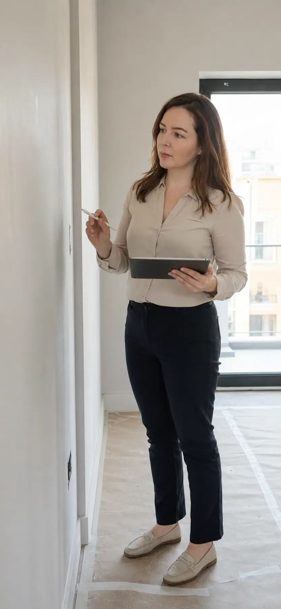

Recebimento de imóvel novo
Conferência técnica da unidade antes da mudança, com registro das pendências aparentes previstas no escopo.
Serviço prioritárioVistorias e laudos técnicos Recife e RMR
Um olhar técnico independente para identificar e registrar pendências aparentes antes da mudança — com clareza sobre o que observar e quais são os próximos passos.
Arquiteta e UrbanistaCAU/PE A254051-7 · Pós-graduanda em Patologia das Construções
01 — Por que vistoriar
No momento da entrega, é comum que o comprador esteja dividido entre a expectativa das chaves e uma lista de detalhes que não sabe como avaliar. É justamente aí que o olhar técnico faz diferença.
“Você não precisa entender de construção para receber as chaves com mais segurança.”

Olhar técnico · Registro · OrientaçãoServiço em destaque
Para quem foi convocado pela construtora para a vistoria ou entrega das chaves e quer conferir a unidade com apoio técnico antes de assumir a mudança.
O escopo e as limitações são definidos na proposta conforme o imóvel, as condições de acesso e os testes possíveis no local.
Pedir orçamento para meu imóvel02 — Serviços
Da entrega das chaves à investigação de uma manifestação, cada serviço parte de uma situação real e de um escopo técnico bem definido.
Conferência técnica da unidade antes da mudança, com registro das pendências aparentes previstas no escopo.
Serviço prioritárioRegistro organizado do estado aparente do imóvel na entrada ou na saída, por ambiente e com evidências fotográficas.
Memória técnica das condições aparentes dos imóveis vizinhos antes do início de uma obra ou intervenção.
Documentação técnica de uma condição, ocorrência ou estado observado em data determinada e dentro de escopo definido.
Inspeção da edificação e elaboração de laudo conforme o escopo e, quando existente, o Termo de Referência aplicável.
Análise de fissuras, umidade, infiltrações e outras manifestações, com conclusões e recomendações compatíveis com o escopo.
03 — Como funciona
Um processo objetivo para entender a necessidade, definir o escopo correto e transformar observações técnicas em informação útil.
Você envia pelo WhatsApp o tipo de imóvel, localização, metragem, data e finalidade do serviço.
Indico o serviço adequado, o que será analisado, o entregável, as condições e o investimento.
A inspeção é realizada de acordo com o escopo e com as condições encontradas no local.
As evidências são organizadas e apresentadas com linguagem clara, limites e recomendações compatíveis.
Patologia das Construções
Fissuras, umidade, infiltrações e degradações recorrentes pedem mais do que uma solução estética. Atuo em Saúde Predial aliando minha formação em Arquitetura à pós-graduação em Patologia das Construções.

04 — A profissional
Arquiteta e Urbanista · CAU/PE A254051-7
Atuo com vistorias, inspeções e documentação técnica do estado dos imóveis em Recife e Região Metropolitana. Meu trabalho traduz sinais e evidências em explicações acessíveis, para que o cliente compreenda o que foi observado e tome decisões com mais segurança.
Sou especialista em Patologia das Construções, aprofundando minha atuação no diagnóstico de manifestações e na preservação da saúde das edificações.
@marinadomingosarq05 — Dúvidas frequentes
Se a sua situação não estiver aqui, me envie uma mensagem. Farei as perguntas necessárias para indicar o serviço que irá melhor lhe atender.
Imóvel novo também pode apresentar pendências aparentes de acabamento, instalação ou funcionamento. A vistoria oferece um olhar técnico independente para registrar o que precisa ser comunicado antes da mudança.
Os itens são definidos na proposta conforme o imóvel e as condições de acesso. A análise pode incluir acabamentos, esquadrias e verificações aparentes de instalações, desde que haja água, energia e condições adequadas para os testes previstos.
O valor considera o tipo de serviço, área e características do imóvel, localização, prazo, complexidade e documento a ser entregue. Por isso, o primeiro contato começa com algumas perguntas objetivas pelo WhatsApp.
A necessidade e a inclusão do RRT dependem do serviço e do escopo contratado. Quando aplicável, essa informação será apresentada de forma clara na proposta.
Marina atende Recife e municípios da Região Metropolitana. Para outras localidades, a viabilidade e o deslocamento são avaliados no orçamento.
Seu imóvel merece clareza técnica